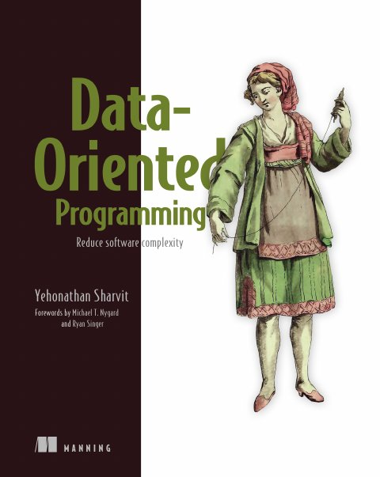

1st edition · 2022 · Manning Publications
Data-Oriented Programming
Yehonathan Sharvit
Data-Oriented Programming: Reduce Software Complexity sets out a paradigm for reducing the complexity of systems that manipulate information, such as frontend applications, backend web servers and web services (p. xx). It is written for developers with a couple of years of experience in a high-level language. OOP developers may need to unlearn some habits; FP developers will find it easier to digest (p. xx).
The book tells a story. Theo, a senior developer at Albatross, struggles with the complexity of an OOP Library Management System for Klafim, the startup of the entrepreneur Nancy. Joe, an independent programmer, mentors him in DOP; later Theo mentors his junior colleague Dave (pp. xx–xxii, xxvi). The author's preface explains the choice: like Plato's dialogues or Goldratt's The Goal, an invented story to share ideas (p. xvii). The code is in basic JavaScript, with Lodash for generic data manipulation and occasional Java for statically typed languages (pp. xx–xxiii).
Its four principles are summarized in Appendix A (pp. 333–334):
- Separate code from data.
- Represent data with generic data structures.
- Data is immutable.
- Separate data schema from data representation.
Forewords are by Michael T. Nygard and Ryan Singer (pp. xiii–xvi).
Chapters
Each lesson walks the chapter section by section — notes with page references, diagrams, simulations, a recap and a self-check. Use ← → to move between slides.
- Chapter 1 · pp. 3–25Complexity of object-oriented programmingTheo, a senior tech lead at the agency Albatross, designs Klafim's library management prototype the classic object-oriented way.▶ simulation
- Chapter 2 · pp. 26–42Separation between code and dataAfter the prototype ships, Theo asks online how to build less complex systems and meets Joe, a San Francisco developer who programmed in Java for nearly a decade before adopting Clojure…▶ simulation
- Chapter 3 · pp. 43–70Basic data manipulationWith code separated from data, Joe and Theo design the data on its own.▶ simulation
- Chapter 4 · pp. 71–90State managementChapter 3 handled queries; this chapter handles mutations, operations that change the system state (p.▶ simulation⌘ lab
- Chapter 5 · pp. 91–109Basic concurrency controlIn production, mutations run concurrently, so moving the state reference forward naively, as chapter 4 did, isn't enough (p.▶ simulation⌘ lab
- Chapter 6 · pp. 110–136Unit testsIn a data-oriented system most functions receive data and return data, so a unit test is easy enough to write in a coffee shop.▶ simulation
- Chapter 7 · pp. 141–162Basic data validationThe part 2 opener sets the stakes.▶ simulation⌘ lab
- Chapter 8 · pp. 163–174Advanced concurrency controlTheo's second objection was that chapter 5's commit phase isn't thread-safe.▶ simulation⌘ lab
- Chapter 9 · pp. 175–196Persistent data structuresTheo has two worries about part 1's structural sharing (p.▶ simulation⌘ lab
- Chapter 10 · pp. 197–219Database operationsTheo's fourth objection was that real data lives in a database, not in memory.▶ simulation⌘ lab
- Chapter 11 · pp. 220–244Web servicesThe next milestone is book information enrichment.▶ simulation⌘ lab
- Chapter 12 · pp. 247–271Advanced data validationPart 3 starts a month later, in the maintenance phase.▶ simulation⌘ lab
- Chapter 13 · pp. 272–294PolymorphismDave misses another OOP feature, polymorphism.▶ simulation⌘ lab
- Chapter 14 · pp. 295–310Advanced data manipulationWhen business logic involves advanced data processing, the generic functions of the language and of libraries may not be enough.▶ simulation⌘ lab
- Chapter 15 · pp. 311–331DebuggingA debugger lets you step through code to find the line that causes a bug, but it doesn't let you reproduce the scenario.▶ simulation⌘ lab
How the book fits together
The book has three parts (pp. xxi–xxii). Part 1 and chapter 7 are needed for parts 2 and 3; otherwise the author suggests reading in order (p. xx).
- Part 1, Flexibility (chapters 1–6): the complexity of OOP, then DOP's basic principles: separating code from data, generic data, immutable state, optimistic concurrency, and simple unit tests.
- Part 2, Scalability (chapters 7–11): data validation at the boundaries, lock-free concurrency with an atom, persistent data structures, databases and web services.
- Part 3, Maintainability (chapters 12–15): validation inside the system, polymorphism with multimethods, custom data manipulation tools, and debugging by reproducing a context.
flowchart TB
subgraph P1["Part 1 · Flexibility"]
C1["1 · Complexity of OOP"] --> C2["2 · Separating code and data"] --> C3["3 · Basic data manipulation"]
C3 --> C4["4 · State management"] --> C5["5 · Basic concurrency control"]
C3 --> C6["6 · Unit tests"]
end
subgraph P2["Part 2 · Scalability"]
C7["7 · Basic data validation"]
C8["8 · Advanced concurrency control"]
C9["9 · Persistent data structures"]
C10["10 · Database operations"] --> C11["11 · Web services"]
end
subgraph P3["Part 3 · Maintainability"]
C12["12 · Advanced data validation"]
C13["13 · Polymorphism"]
C14["14 · Advanced data manipulation"]
C15["15 · Debugging"]
end
C3 --> C7 --> C10
C5 --> C8
C4 --> C9
C7 --> C12 --> C13
C6 --> C12
C6 & C4 --> C15
C3 --> C14The parts and chapter order are the book's (pp. xxi–xxii); the arrows are the vault's reading of which chapters build on which.
Some threads run through the whole book:
- Generic data and generic functions: maps, arrays and Lodash replace classes and their methods (2, 3, 10, 11, 14).
- Immutability makes state versions, concurrency, persistent structures and reproducibility work (4, 5, 8, 9, 15).
- Schemas as data, separate from the data itself: at the boundaries, inside the system, in diagrams and in generated tests (7, 10, 11, 12, 13).
- Data in, data out makes unit tests and debugging simple (6, 12, 14, 15).
Simulations
Interactive models of the mechanisms the book describes. They are embedded in the lessons too; implementations are the vault’s own.
- Chapter 1The “tiny” featureAdd VIP and Super members to Theo's OOP class hierarchy and count the moved methods and diamonds, then make the same changes in the DOP design with one predicate each.
- Chapter 1Split code from dataSplit the classes of Theo's Library Management System into code and data entities one at a time, and watch the relations per entity and the number of independent parts change.
- Chapter 2Nouns and verbsSort the phrases of Nancy's requirements into data entities and functions, and watch the data mind map and the Library module build up.
- Chapter 3Information pathsClick through the catalog data of Data-Oriented Programming's chapter 3, or type a path, and watch a generic get resolve it one key at a time, including missing keys and array indexes.
- Chapter 3Search as data manipulationRun the chapter 3 book search stage by stage over a small catalog: get the books, filter by title, map each to a BookInfo and serialize to JSON. Change the query, add a field to a book, and see which code cares.
- Chapter 4Commit and undoRun mutations through the calculation and commit phases of Data-Oriented Programming's chapter 4, reject an invalid version at the commit, and compare a single previous reference with a stack of versions when undoing.
- Chapter 4Structural sharingSet a value deep in the library data immutably and see which maps are new and which are shared with the previous version; then mutate shared data with a native setter and watch both versions change.
- Chapter 5Optimistic or lockedSimulate concurrent mutations against a store with optimistic commits or a global lock, vary how many distinct fields they touch, and compare throughput and aborts.
- Chapter 5Reconcile two mutationsStart two mutations from the same tiny library, commit one, then the other, and watch the commit phase fast-forward, three-way merge or abort by comparing the information paths of two diffs.
- Chapter 6Tree of function callsPick a node in the search or add-member call tree of Data-Oriented Programming's chapter 6 to see its inputs and outputs, the fields it reads, the minimal test data valid in its context, and how many test cases the book's rule suggests.
- Chapter 6Test benchRun the chapter 6 search test cases, compare results as strings or as parsed data, shuffle the field order of the serialized output, and add the all-lowercase case to find and fix the bug.
- Chapter 7ISBN compositionToggle which ISBN fields an Open Library book response has and see how allOf with anyOf accepts it, while oneOf would reject Watchmen, which has both.
- Chapter 7JSON Schema playgroundValidate the chapter 7 search requests and responses against their JSON Schemas, edit the data to introduce typos and extra fields, and switch between first-error and all-errors reporting.
- Chapter 8Swap or lockRun threads that increment a shared counter with no protection, with a mutex, or with an atom, step through a seeded interleaving, and count lost updates, lock waits and swap retries.
- Chapter 8The phone-call deadlockLet Theo and Joe each pick up their own line and then dial the other at nearly the same time, see the deadlock, then replay the same conversation as text messages through an atom.
- Chapter 9Path copyingUpdate one element of a 64-element persistent vector with branching factor 2, 4 or 32, and see which nodes are copied, which are shared, and how the depth changes.
- Chapter 9Copying at scaleGrow a collection from a thousand to ten billion elements and compare a full shallow copy with path copying at branching factors 2 and 32, counting elements copied and cache lines touched per update.
- Chapter 10Group and aggregateStep through groupBy and aggregateField to turn the three rows of a books-and-authors join into two books with their author names, then add rows and see the same generic code handle them.
- Chapter 10Rename keysEdit a key map and watch one generic renameResultKeys function reshape book rows and user rows from Data-Oriented Programming's chapter 10, including keys that aren't present.
- Chapter 11Enrichment flowChoose the fields a client requests and step through the chapter 11 search endpoint: validate the request, query the database, fetch and double-filter each Open Library record, and join the two arrays by ISBN.
- Chapter 11Nest or mergeCombine a database book record with an Open Library record by nesting or merging, add a field both sides share, and choose which side wins the conflict.
- Chapter 12Validation inside the systemCall searchBooksByTitle with valid and broken catalogs and queries, switch between dev, staging and production, and see the argument and return-value schema checks report each mistake, or let it through.
- Chapter 12Schema-based testsGenerate random catalogs from the catalog schema with a seed, search by the first letter of the first title, and let the return-value check decide whether the test passes; then apply Dave's "Not available" fix and rerun.
- Chapter 13Author names by prolificityDrag an author's number of books across the 10/11 and 50/51 boundaries and switch between HTML and Markdown to see Author.myName's dispatch value, the chosen method and the formatted name.
- Chapter 13Multimethod dispatchCall greet, greetLang and dysGreet on the book's animals, watch the dispatch function emit a value and the method table pick a method, and register a default or a new animal without touching the existing methods.
- Chapter 14The least generic toolToggle book items lent or not and switch between the forEach, reduce and countByBoolField versions of lendingRatio: the ratio is the same, but the business logic shrinks to what it means.
- Chapter 14Unwind and groupStep through unwind on each book of Data-Oriented Programming's chapter 14, then flatMap and groupBy on bookItems.libId, and watch each book's title and ISBN travel with its items; add an item at a new library, or see what a mutating set does to unwind.
- Chapter 15Capture and replayCapture a function's context with console.log or JSON.stringify, replay the captured catalog and query in a mock REPL, and run the eight test queries against the three versions of book search from Data-Oriented Programming's chapter 15.
- Chapter 15Reproducible or not?Replay a captured call while toggling mutable data during an asynchronous dump, a mutable or immutable database, and other users changing data, and see when the replayed result still matches the original.
Lab experiments
Deterministic Python (standard library only). Run each from its folder; the README lists the expected output.
| Ch. | Experiment | Command |
|---|---|---|
| 4 | Structural sharing in numbers | python3 structural_sharing.py |
| 5 | Three-way merge in Python | python3 three_way_merge.py |
| 7 | A mini JSON Schema validator | python3 mini_json_schema.py |
| 8 | Atoms in a seeded scheduler | python3 atom_swap.py |
| 9 | A persistent vector in Python | python3 persistent_vector.py |
| 10 | Rows as maps with SQLite | python3 rows_as_maps.py |
| 11 | Joining sources by key | python3 join_arrays.py |
| 12 | Schema-based unit tests | python3 schema_based_tests.py |
| 13 | Multimethods from scratch | python3 multimethods.py |
| 14 | Custom data tools | python3 custom_data_tools.py |
| 15 | Capture and replay | python3 capture_replay.py |
Key concepts
These ideas recur across chapters; each row lists the chapters that discuss them. The definitions are the vault's summaries of the book's explanations.
| Concept | Definition | Chapters |
|---|---|---|
| Separate code from data (Principle #1) | Code lives in stateless functions whose behaviour doesn't depend on data encapsulated in their context; data lives in entities. | 1 · 2 |
| Generic data structures (Principle #2) | Records are maps and collections are arrays, manipulated with generic functions such as Lodash's, instead of classes. | 3 · 10 · 11 · 14 |
| Immutable data (Principle #3) | Data is never changed in place; "mutations" compute a new version, sharing unchanged parts. | 4 · 9 · 15 |
| Separate schema from representation (Principle #4) | The expected shape of data is itself data (JSON Schema), validated when and where you choose. | 7 · 12 |
| Index (homogeneous map) | A map from IDs to records of the same shape, such as booksByIsbn, as opposed to a record's heterogeneous map. | 3 · 12 |
| Information path | The chain of keys from the system data's root to a value, used with _.get. | 3 · 5 |
| Structural sharing | A new version copies only the path to what changed and shares everything else with the previous version. | 4 · 9 |
| Multi-version state | The system state is a reference to the current version of immutable system data; a mutation is a calculation phase plus a commit. | 4 · 5 · 8 |
| Optimistic concurrency and reconciliation | Writers compute without locks; on commit, non-conflicting changes are merged with a three-way diff, and conflicts abort. | 5 · 8 |
| Atom | A thread-safe reference updated by compare-and-swap in a retry loop, so state is managed without locks. | 8 |
| Persistent data structures | Immutable collections (Bagwell's hash array mapped tries) whose updates are efficient through structural sharing. | 9 |
| Validation at the boundaries | Requests, responses and external data are validated against schemas where they enter and leave the system, in production. | 7 · 10 · 11 |
| Validation inside the system | Function arguments and return values are validated against schemas in development only, as documentation and early errors. | 12 · 13 |
| Data-in, data-out tests | Unit tests call a function with data and compare the returned data, with no mocks or object state to set up. | 6 · 12 · 15 |
| Multimethods | Polymorphism without objects: a dispatch function emits a value, and methods registered for each value implement it; single, multiple or dynamic dispatch. | 13 |
| Custom data manipulation tools | Small, well-named generic functions (update, flatMap, unwind) that keep business logic free of low-level iteration. | 14 |
| Context capturing | Serializing a function's arguments so the call can be replayed in a REPL or a unit test; works because data is immutable and serializable. | 15 |